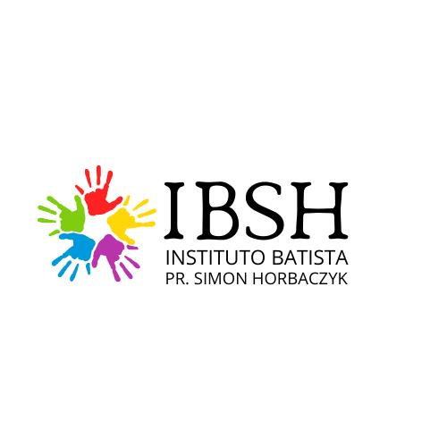

Iniciativas do bairro
Conheça quem já atua em São Mateus e veja como ajudar.
FAÇA PARTE DESSA REDE
Iniciativas
Conheça as organizações e projetos que atuam no território.

Associação Casa Pai José
AssociaçãoIniciativa local de apoio social que atua em São Mateus.
Conhecer a iniciativa
IBSH - Instituto Batista Pr. Simon Horbaczyk
InstitutoDesenvolve programas socioassistenciais em São Mateus e adjacências.
Conhecer a iniciativa
São Mateus em Movimento
Associação comunitária e socioculturalPromove iniciativas culturais, educacionais, ecológicas e sociais na Vila Flávia.
Conhecer a iniciativa [PREENCHER]Paróquia Jesus Ressuscitado
[PREENCHER][PREENCHER]
Conhecer a iniciativa